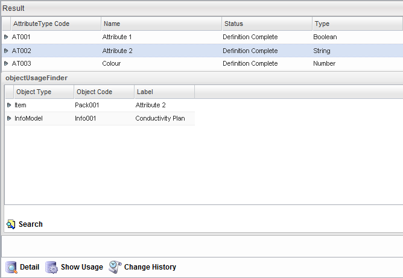

The Show Usage feature allows you to view where the Attribute Types has been used in or associated with other Catalog Objects. To access this feature, navigate to the Attribute Type Search Results page, select the Attribute and click the Show Usage button at the bottom of the page. The example below shows that the Attribute Attribute @ has been associated with the Item Pack001 and InfoModel Info001.
|  |
Note: Items have a Show Usage button with or without opening a project.